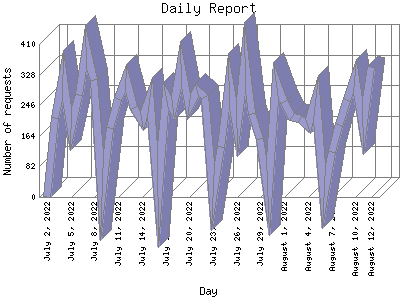

Analog 5.24
Analog 5.24 Report Magic for Analog 2.13
Report Magic for Analog 2.13The Daily Report identifies the activity for each day within the reporting period. Remember that one page hit can result in several server requests as the images for each page are loaded.

| Day | Number of requests | Percentage of the requests | |
|---|---|---|---|
| 1. | August 12, 2022 | 348 | 0.3% |
| 2. | August 11, 2022 | 187 | 0.1% |
| 3. | August 10, 2022 | 323 | 0.3% |
| 4. | August 9, 2022 | 259 | 0.2% |
| 5. | August 8, 2022 | 193 | 0.1% |
| 6. | August 7, 2022 | 120 | 0.1% |
| 7. | August 6, 2022 | 0 | 0% |
| 8. | August 5, 2022 | 266 | 0.2% |
| 9. | August 4, 2022 | 189 | 0.1% |
| 10. | August 3, 2022 | 209 | 0.2% |
| 11. | August 2, 2022 | 215 | 0.2% |
| 12. | August 1, 2022 | 255 | 0.2% |
| 13. | July 31, 2022 | 312 | 0.2% |
| 14. | July 30, 2022 | 0 | 0% |
| 15. | July 29, 2022 | 156 | 0.1% |
| 16. | July 28, 2022 | 222 | 0.2% |
| 17. | July 27, 2022 | 375 | 0.3% |
| 18. | July 26, 2022 | 185 | 0.1% |
| 19. | July 25, 2022 | 310 | 0.2% |
| 20. | July 24, 2022 | 135 | 0.1% |
| 21. | July 23, 2022 | 0 | 0% |
| 22. | July 22, 2022 | 267 | 0.2% |
| 23. | July 21, 2022 | 286 | 0.2% |
| 24. | July 20, 2022 | 241 | 0.2% |
| 25. | July 19, 2022 | 357 | 0.3% |
| 26. | July 18, 2022 | 239 | 0.2% |
| 27. | July 17, 2022 | 271 | 0.2% |
| 28. | July 16, 2022 | 0 | 0% |
| 29. | July 15, 2022 | 268 | 0.2% |
| 30. | July 14, 2022 | 203 | 0.1% |
| 31. | July 13, 2022 | 239 | 0.2% |
| 32. | July 12, 2022 | 320 | 0.3% |
| 33. | July 11, 2022 | 263 | 0.2% |
| 34. | July 10, 2022 | 185 | 0.1% |
| 35. | July 9, 2022 | 0 | 0% |
| 36. | July 8, 2022 | 314 | 0.3% |
| 37. | July 7, 2022 | 402 | 0.3% |
| 38. | July 6, 2022 | 274 | 0.2% |
| 39. | July 5, 2022 | 182 | 0.1% |
| 40. | July 4, 2022 | 328 | 0.3% |
| 41. | July 3, 2022 | 211 | 0.2% |
| 42. | July 2, 2022 | 0 | 0% |
Most active day May 3, 2008 : 2,131 requests handled.
Daily average: 253 requests handled.
This report was generated on August 14, 2022 05:47.
Report time frame December 18, 2007 17:05 to August 12, 2022 23:19.
| Web statistics report produced by: | |
| Analog 5.24 | Report Magic for Analog 2.13 |